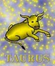

<html>
<head>
<title>Bika</title>
<script type="text/javascript" src="js/public.js"></script>
<script type="text/javascript" src="js/subpage.js"></script>
<script language="JavaScript1.1">
IMG_PICT="images/inte/horo/" 
horopict = ""
var subpage = new Array(
horopict+"Szilárdan megveti a lábát a földön és talpon is marad. Olyan, mint egy sziklatömbbõl kifaragott szobor. Nem rohan, nem száguld, hanem szép lassan halad, lassan, de biztosa. Hatalmas erõ van benne, mindennel és mindenkivel képes szembeszállni. Alapossága, türelme, kitartása, állhatatossága révén a megbízhatóság jelképe. Alig akad köztük idealista, álmodozó, vagy illúzió kergetõ. Mielõtt valamihez hozzákezd, azt sokszor megfontolja, alaposan körbejárja, mérlegeli. Kerül minden változást, újítást. Nagyon fontos számára a kiegyensúlyozott, nyugodt, békés szerelmi élet. Hûségesek. A csalódás olykor tévútra viheti, és ilyenkor tobzódik a földi gyönyörökben. Igazi ínyenc az asztalnál és az ágyban egyaránt. Nem tanul gyorsan, könnyen, de ha megtanulta azt mindig tökéletesen csinálja, tudja. Nem tud egyszerre többféle dolgot csinálni, mert többfelé megosztani a figyelmét iszonyú erõfeszítésébe kerül, mind fizikailag, mind szellemileg. Könnyen lehet ingerelni õket, ilyenkor elfutja agyát a vér, és látványos dührohamot produkál. Egyetlen igazi célja a jólét megteremtése. Föld-jegy, szilárd minõség. Az állatöv második jele. Uralkodója a Vénusz. Eleme a föld és a szilárd kereszthez tartozik. A föld-elem a szilárd minõséggel párosulva a Bikát a legragaszkodóbb, legkitartóbb, legtürelmesebb, legállhatatosabb és legmateriálisabb jellé teszi. ", 
horopict+"A Bika jele, melyet két felálló szarv jelképez inkább az erõk befogadását szimbolizálja és nem a hatni akarást. A kör végtelensége fölött a lélek félköre jelképezi, hogy a Bika jelû ember az érzelmeket többre becsüli, mint a szellemet. Az állatövnek lényeges eleme, hogy ellentéteikben egymást kiegészítik. A Bika a megállapodást, a kivárást, a helyben maradást szimbolizálja. A Bikában lehetõség van arra, hogy feltöltõdjön, erõt gyûjtsön. Mindenkiben, de a Bika jelû emberben különösen jelen van az igény, hogy biztosítsa magának, amit megszerzett. Úgy gondolja, hogy a nagy rohanás, erõkifejtés után ideje élni az életet. A Bika törekszik a dolgok megtartására. Számára különösen fontossá válik a tárgyakkal való kapcsolata. A Bika nemcsak természetkedvelõ, hanem a természetes anyagokat is elõbbre tartja a mûvinél, mesterkéltnél. Elsõdleges számára az esztétikum. Mindenben mértéktartó, csak egy dologban nem. Mindent, ami szép, értékes, a mindennapi kényelemhez hozzátartozik, azt meg akarja szerezni. A Bika nyugodt, higgadt, kitartó. Az életet a gyakorlatban akarja megismerni. Mindennek utána jár, mindent szeret megfogni, megtapogatni, élvezni a tapintás gyönyörûségét, élvezni a színek kavalkádját, az illatok orgiáját, az ízek zamatát. Mindent befogadni, átélni, ez a Bika igazi énje. Ez a mindent befogadás csak a realitás keretein belül lehetséges. Ne felejtsük, hogy a föld az eleme, tehát a realitás számára a biztonságot jelenti. ", 
horopict+"\"Két lábbal áll a földön\". Ez azt jelenti, hogy a mindennapi életben inkább az egyszerû, hétköznapi érdekli. Minden változástól fél, minden új irritálja, viszont jól boldogul a megszokott közegben. Szereti a rendet maga körül, de nem viszi túlzásba. Mindent a kényelem és harmónia szempontjából ítél meg az otthoni tevékenységében. Hajlamos lustaságra, de csak akkor, ha esztétikai igényeinek eleget tett. Nem szereti, ha sürgetik. A kapkodás irritálja. A lassúság a biztonságérzetébõl fakad. Semmihez sem kezd alapos körültekintés nélkül. Gyûlöli a felületes, fél munkát. Amit elkezd, azt be is fejezi. Szeret dolgozni és van türelme, kitartása bármilyen munka elvégzéséhez, mivel nem könnyen változtat. Becsületes és megbízható munkaerõ. Igazán elemében ott érzi jól magát, ahol minden a megszokott helyén van, otthonosan berendezett légkör fogadja, tudja, mi a feladata és nem jönnek váratlan meglepetések. Elõszeretettel választ olyan munkakört, amely a szabadban természeti környezetben zajlik. Kertészkedés, földmunka, erdészet tartoznak kedvelt ténykedései közé. A gyakorlati kérdésekben van otthon, de ez nem azt jelenti, hogy az érzelmi élete háttérbe szorulna. Sõt éppen érzelmei irányítják mindennapjait. Amilyen lassan fogad bizalmába a Bika típus, legalább olyan nehéz elveszíteni a kegyeit. Sajnos ezzel sokan vissza is élnek. Bár türelme kifogyhatatlan, ha sokáig dühítik, elborul az agya. A Bika számára az erõfitogtatás nem szempont. ",
horopict+"Általában nem tartozik a törékeny emberek közé, mégis szelíd, jóságos, testi erejével nem él vissza. Türelme sok fölösleges feszültségtõl védi meg. Humora, természetes életvidámsága kellemes emberré teszi. Mivel alapjaiban naiv, a vicceket lassabban érti meg. .Gyakran hosszabb idõ telik el, mire rájön, hogy megsértették. A sértést, vagy számára kellemetlen eseményt nem felejti el egyhamar. Sõt kifejezetten ragaszkodik emlékeihez, annyira, hogy képtelen túltenni magát egy-egy eseményen, ha az erõsen hatott rá érzelmileg. Szereti a békés, nyugodt életet. Mindennek megadja a módját. Jót enni, jót inni, jót aludni, és jót szerelmeskedni. Nem kíván különlegességeket, de amit csinál, azt teljes odafigyeléssel teszi. A Bika férfiak legalább olyan jól fõznek, mint a nõk. Nem szeret koplalni, sõt inkább a bõséges étkezést kultiválja. Ha leül az asztalhoz, akkor mindent oda készít a közelbe, hogy ne kelljen ugrálnia. A minõség fontosabb számára, mint a mennyiség. Keveset mozog magáért a mozgásért, ez is szerepet játszik abban, hogy hízásra, zsírlerakódásra nagyobb esélye van, mint a többi jelnek. A Bikát nagyon is izgatja értékeinek megóvása, de általában minden értékkel törõdik, nemcsak a sajátjával. Azt írják az asztrológiai könyvekben, hogy anyagias. Szeret jól élni.. A Bika jelû ember legnagyobb problémája, hogy amihez egyszer hozzájutott, attól nem, vagy csak kínok kínjával válik meg. ",
horopict+"Ez a túlzott ragaszkodás, birtokféltés sokszor a szó szoros értelmében beteggé teszi. A Bika számára maga az elmúlás is fõbûnnek számít. Ritkán lesz öngyilkos, annyira szeret élni. A Bika a hûség mintaképe. Sokszor akkor is kitart a partnere mellett, ha az megcsalja. Nem szereti a változatosságot semmiben. A jel egyszerûbb képviselõi túlzásba viszik a konokságot. Lusták és konzervatívok a végtelenségig. Meggyõzni õket képtelenség. Lassú felfogásúak, sõt egyes esetekben rosszindulatúan buták. Ósdiak és elhanyagoltak. Erõszakosak, brutálisak és ha lehetõségük nyílik rá, maximálisan kihasználják környezetüket. A fejlettebb szinten állók, ha tehetik, jótékonykodnak, de a lehetõségeikhez képest keveset juttatnak a rászorulóknak attól való félelmükben, hogy elszegényednek. A Bikák többsége kifejezetten materiális beállítottságú. Általában jó zenei érzékkel rendelkeznek. Jó érzékük van mindenhez, ami szép. Élvezik is és csinálják is ami szép. Általában jó vezetõk. Körültekintõek, alaposak. Jólelkûek a beosztottakhoz, hiszen érzelmi beállítottságúak. Szeretik a pontos munkát, a szabályokhoz ragaszkodnak. A legtöbb problémájuk abból adódik, hogy nem kedvelik az újításokat, nem elégé vállalkozó szellemûek. Gazdasági rizikót nem vállalnak. Konokul ragaszkodnak a kitûzött céljukhoz. Stabil munkaerõ, szorgalmas, lehet rá számítani. . Nagyon komolyan veszi a pontosságot. ",
horopict+"A káoszt nem viseli el és azt sem, ha állandóan változtatják a környezetét. Korán érõ, hamar szerelembe esõ a Bika. A hûséget komolyan veszi magától is és másoktól is. A partnerétõl maximális õszinteséget vár. A szexuális élet kiemelkedõen fontos számára, de csak akkor, ha érzelmi alapon történik. Nem szereti a változatosságot, de kedveli a heves érzelmeket. Mindennek megadja a módját, a szexnek is. Alkalmazkodik a partner igényeihez, bár inkább a szokványos formákhoz húz. A gusztustalannak, perverznek tûnõ módozatok megbotránkoztatják. A kis kedvességek, apró ajándékok meghatják. Ez fõleg az egyszerûbb típusnál látható. Nagyon nehezen válik, de ha mégis, úgy a partner számíthat arra, hogy nem lesz könnyû az anyagi javakon osztozkodni vele. A családjához nagyon kötõdõ ember. A Bika annak örül ha szerettei mindig a közelében vannak. Birtokló módon szeret mindenkit. Ha környezete sokat van távol, az nagyon lehangolja. Ha hajlamos is kicsit a lustaságra, segítõkész, figyelmes, gyengéd. Sajnos nem szeret mozogni és az édességet nagyon szereti, ezért hízásra hajlamos. Nagyon szereti, ha becézgetik, simogatják. Nem tartozik a legjobban tanulók közé. ",
horopict+"<b>Bolygója:</b> a Vénusz<br>"
+"<b>Eleme:</b> a föld<br>"
+"<b>Természete:</b> szilard<br>"
+"<b>Erényei:</b>megfontolt, alapos, hûséges, kitartó, megbízható<br>"
+"<b>Hibái:</b> lassú, makacs, olykor csökönyös, anyagias, konzervatív <br>"
+"<b>Testrésze:</b> a nyak<br>"
+"<b>Betegségre való hajlam:</b> torok- és gégegyulladás, epe- és vesekõ, nemi betegségek, reumás fájdalmak <br>"
+"<b>Védõkövek:</b> zafír, karneol<br>"
+"<b>Szerencsekövek:</b> achát, rózsakvarc, smaragd, turmalin, gyémánt "
);
</script>
</head>
<BODY background="images/public/background/bg1.jpg">
<script language="JavaScript1.1">
	firstdraw("BIKA április 21. - május 20.");
</script>
</body>
</html>